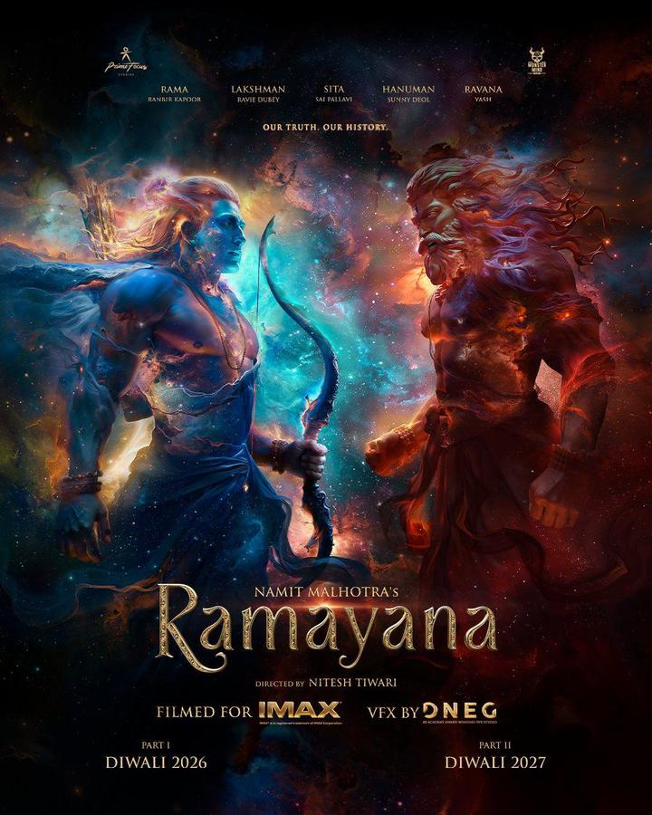

派拉蒙出品、布拉德·皮特主演新片官宣中国内地定档 9 月 30 日，晚于北美（9 月 25 日）上映，并同步释出内地定档海报与预告。
前陆军特种部队士兵詹姆斯（布拉德·皮特 饰）与他的战犬奥丁（狗狗 Uber 饰）曾并肩出生入死。退役后计划安享晚年时，两人却因一场坠机事故被困在阿拉斯加深处的极地荒野，必须在严酷的自然环境中彼此扶持、为生存而战，上演人犬羁绊的绝境求生。
爱奇艺出品院线电影《一路超平安》今日发布定档预告与定档海报，官宣将于 9 月 19 日全国上映。这也是继《爸爸爱喜禾》真实故事 IP 后的银幕改编，切入自闭症家庭与父爱议题，走公路喜剧路线。
代驾司机老蔡（乔杉 饰）带着迷恋鲸鱼的自闭症儿子喜禾（黄翎翰 饰），一路向南开启一场说走就走的「寻鲸之旅」。在一连串荒诞意外中父子跌跌撞撞向前，笑声与泪水交织成旅途主旋律——一场看似不靠谱的出发，反而是父亲对儿子最深沉的告白。
硬核格斗题材院线电影《战觉城》于山西交城 JCK 战觉城国际格斗中心开机，青年演员明莉领衔女一号，计划 2027 年初登陆全国院线。
影片创新融合体育竞技、家庭伦理与犯罪悬疑多重叙事维度，既还原八角笼格斗赛场的热血专业质感，又深挖赛场背后复杂人性。明莉 饰 核心角色林浅，在拳台竞技的燃爽场面与亲情、抉择、人性挣扎之间完成突破。
9 月 3 日中国人民抗日战争胜利纪念日，红色历史题材电影《图云关》正式启动全国宣传工作，同步发布主题为「战士」的冲锋版预告片。影片根据抗战时期中国红十字会救护总队在贵阳图云关开展战地救护的真实历史改编，填补了贵州图云关抗战历史影视化表达的空白。据剧组透露，接下来将陆续放出定档海报、多版本主题曲 MV、幕后花絮与主创访谈。
陈安邦接到任务，协助中国红十字救护总队找出渗入的特务，保证苏沐夕等顺利确认病毒属性和拿出治疗方案。陈安邦与沈雪飞等合力将日军渗入的特务抓获，并将赶制出来的疫苗及医疗设备送往前线。
院线电影《一场致命的闺蜜游戏》于 9 月 2 日上午在浙江建德市寿昌镇正式开机，剧组将赴杭州、建德两地取景，拍摄周期 30 天。故事围绕「一场温柔的陷阱」展开，讲述闺蜜之间因无心伤害而引发的复仇与真相揭露。该片开机消息于 9 月 3 日下午经潮新闻对外发布，属今日新增节点。
杰森·斯坦森主演动作片《怒之杀》明日（9 月 4 日）登陆内地院线。该片原定档 8 月 21 日，后改档至 9 月 4 日；片方提示动作及暴力场面尺度较大，更适合成年观众。
科尔·里德（杰森·斯坦森 饰）本是富豪蒂布的贴身保镖，一场突袭令蒂布身亡，科尔反被诬陷为凶手、全境通缉。为洗清嫌疑、追查真凶，他孤身登上远洋货轮在公海展开调查，在密闭空间近身搏杀与枪火交锋中，逐步卷入更大的国际阴谋。（导演让-弗朗索瓦·雷切曾执导《头号公敌》）

豆瓣词条 / 海报索尼影业（Sony Pictures Entertainment）9 月 3 日宣布，尼泰什·蒂瓦里执导的印度史诗《罗摩衍那：王子传奇》（Ramayana Part 1）将于 2026 年 11 月 6 日全球上映，紧邻排灯节档期；印度本土由 Dharma Productions 发行，定档 11 月 8 日。影片分两部推进，第二部锁定 2027 年排灯节。
改编自古印度史诗《罗摩衍那》。流亡王子罗摩与妻子悉多在林中生活，悉多被魔王罗波那掳走，由此引发一场正邪之间的大战。首部聚焦罗摩与悉多的流亡岁月，以及悉多被劫后走向两王对决的变局。
由雷尼·哈林（《虎胆龙威 2》《绝岭雄风》）执导、塞缪尔·杰克逊主演的动作惊悚片《The Beast》发布首支预告，定档 2026 年 10 月 9 日北美上映。片名直指美国总统座驾「野兽（The Beast）」，杰克逊饰演的总统在一场武装政变中被迫亲自驾驶专车突围，乔尔·金纳曼饰演一名重伤的特勤局特工。
一支身份不明的武装民兵对美国发动政变，迫使杰克逊饰演的总统亲自驾驶绰号「野兽」的总统专车，逐步解锁车上高度机密的攻击性能。他必须在保护一名重伤特勤局特工、与妻子会合的同时，把国家从崩溃边缘拉回来。
年代家庭生活剧《生逢其时》今晚（9 月 3 日）在 CCTV-1 黄金档正式首播，爱奇艺、咪咕视频同步上线；前一日刚发布双人海报与 OST 阵容。
以 90 年代北方厂矿小镇青梧镇为背景，齐、曹两家同一天诞下婴儿因医院失误抱错，开启长达三十年的错位人生。关晓彤 饰 白化病女孩齐时，王子奇 饰 曹信，两人在错位人生中青梅竹马、彼此扶持——国内首部聚焦白化病群体的年代剧。（改编自韩十三小说《近邻》）
改编自玄机科技同名动画的古装悬疑剧《天行九歌》于 9 月 3 日在横店正式开机，由爱奇艺出品、北京时代星火文化传媒联合出品，独家登陆爱奇艺。剧集以战国末年韩国朝堂为背景，讲述九公子韩非（剧中改名韩风）归国后破解鬼兵谜案，与卫庄、紫女、张贤结为「流沙」，少年团破迷案、斗罗网的故事。
改编自玄机科技动画片《天行九歌第一部》。九公子韩风归国后，为立足朝堂而破鬼兵谜案，也因此与卫庄、紫女、张贤相识，此案后以韩风为首四人成立流沙团，少年们开启破迷案斗罗网，为理想为家国热血奋斗的征程。
HBO 于本周放出剧版《哈利·波特与魔法石》第二支 Teaser，正式确认第一季将于 2026 年 12 月 25 日（圣诞节）在 HBO / HBO Max 全球开播，第一季 8 集、每集 60 分钟；剧集开播前已续订第二季（将改编《密室》）。
该剧是对 J.K. 罗琳原著的电视剧版重启改编，第一季《哈利·波特与魔法石》完整呈现哈利初入霍格沃茨的第一年：分院帽仪式、魁地奇、厄里斯魔镜、密室巨怪等经典桥段。新发布预告首度曝光全新设计的山怪造型与部分角色互动。
盖·里奇《绅士们》剧版第二季今日（9 月 3 日）在 Netflix 全球上线，Netflix 已提前续订第三季。
承接首季，埃迪（Theo James 饰）与苏西（Kaya Scodelario 饰）将把犯罪帝国扩张至意大利，闯入更广阔的地下世界。新一季加入 Hugh Bonneville、Michele Morrone、Sergio Castellitto 等新卡司，延续盖·里奇式的英伦黑帮风格。
暑期档后 9 月进入市场「调整期」，已约 40 部影片定档，以小成本制作与经典重映为主，为 9 月 25 日中秋节档及随后的国庆档预热。惊悚片赛道异常热闹（约 17 部含该标签），《坠落2:死点》《怒之杀》等将率先登场；多部经典（《杀死比尔:血色全传》导演剪辑版、王家卫《阿飞正传》修复版等）大银幕重逢。
国产动画《牛来》8 月 31 日官宣密钥延期，全版本放映权限延续至 10 月 4 日，整体院线放映周期拉长到整两个月，成为今年暑期档跑出的最大黑马。该片 8 月 5 日近乎「裸映」开局，票房仅数千元，后靠互联网二创玩梗发酵出圈、热度反向倒逼院线加场，累计票房逼近 6000 万——中小成本作品靠民间热度跑通院线长线的新样本。
行业观察显示：2025 年国内长剧开机数量约 150 部，同比下降约 26%；2026 年一季度约 30 部，虽较去年同期略有回暖，但仍远低于 2024 年同期的 55 部。长剧生产端持续收缩，没有头部 IP、码不到明星的中腰部项目更难存活，部分头部演员也面临空档。承接这部分产能的是单集 10—20 分钟量级的「中剧」——拍摄周期通常 30 多天、投入风险远低于长剧；同时 AI 影视的单集时长已从竖屏一两分钟拉长到横屏接近十分钟，腾讯视频《北派笔记》上线首周分账超百万。